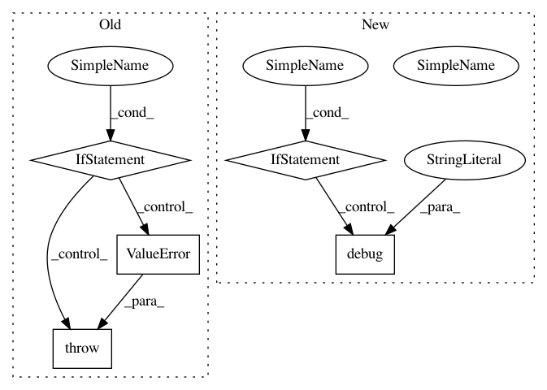

bd3a1021d7d990d5d4a8a71cc0621485af2d09e4,perfkitbenchmarker/linux_virtual_machine.py,LsCpuResults,__init__,#LsCpuResults#Any#,1631
Before Change
lscpu)
match = re.search(r"Core\(s\)\ per\ socket:\s*(\d+)$", lscpu, re.MULTILINE)
if match:
self.cores_per_socket = int(match.group(1))
else:
raise ValueError("Core(s) per socket could not be found in lscpu "
"value:\n%s" % lscpu)
match = re.search(r"Socket\(s\):\s*(\d+)$", lscpu, re.MULTILINE)
if match:
self.socket_count = int(match.group(1))
else:
After Change
self.data = {}
for line in lscpu.splitlines():
m = self._KEY_VALUE_RE.match(line)
if m:
self.data[m.group("key")] = m.group("value")
else:
logging.debug("Ignoring bad lscpu line "%s"", line)
def GetInt(key):
if key in self.data and self.data[key].isdigit():
return int(self.data[key])
raise ValueError("Could not find integer "{}" in {}".format(
In pattern: SUPERPATTERN
Frequency: 3
Non-data size: 5
Instances
Project Name: GoogleCloudPlatform/PerfKitBenchmarker
Commit Name: bd3a1021d7d990d5d4a8a71cc0621485af2d09e4
Time: 2019-09-03
Author: chriswilkes@google.com
File Name: perfkitbenchmarker/linux_virtual_machine.py
Class Name: LsCpuResults
Method Name: __init__
Project Name: deepgram/kur
Commit Name: d1dfcc0b80c4ecead8866473e5cfdfd351ac7cbd
Time: 2017-05-10
Author: ajsyp@syptech.net
File Name: kur/backend/keras_backend.py
Class Name: KerasBackend
Method Name: process_loss
Project Name: deepgram/kur
Commit Name: d1dfcc0b80c4ecead8866473e5cfdfd351ac7cbd
Time: 2017-05-10
Author: ajsyp@syptech.net
File Name: kur/backend/pytorch_backend.py
Class Name: PyTorchBackend
Method Name: process_loss